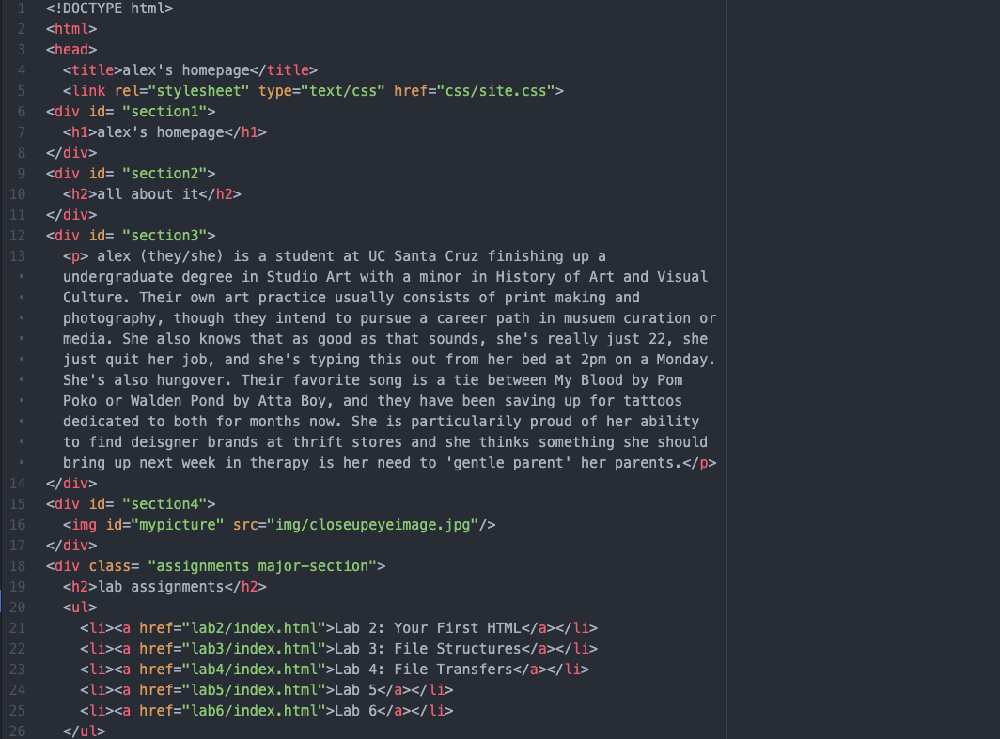
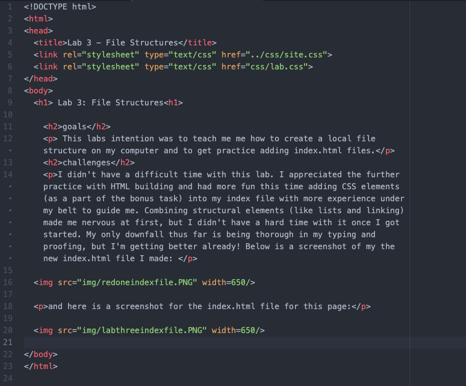

This labs intention was to teach me me how to create a local file structure on my computer and to get practice adding index.html files.
I didn't have a difficult time with this lab. I appreciated the further practice with HTML building and had more fun this time adding CSS elements (as a part of the bonus task) into my index file with more experience under my belt to guide me. Combining structural elements (like lists and linking) made me nervous at first, but I didn't have a hard time with it once I got started. My only downfall thus far is being thorough in my typing and proofing, but I'm getting better already! Below is a screenshot of my the new index.html file I made:
and here is a screenshot for the index.html file for this page:
